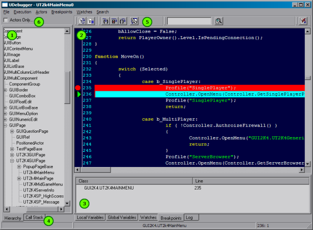
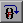
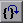
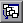

UDN
Search public documentation:
UnrealScriptDebuggerKR
English Translation
日本語訳
Interested in the Unreal Engine?
Visit the Unreal Technology site.
Looking for jobs and company info?
Check out the Epic games site.
Questions about support via UDN?
Contact the UDN Staff
日本語訳
Interested in the Unreal Engine?
Visit the Unreal Technology site.
Looking for jobs and company info?
Check out the Epic games site.
Questions about support via UDN?
Contact the UDN Staff
UnrealScript Debugger 사용자 설명서
최종 업데이트 Michiel Hendriks - 문서 보충. 이전 업데이트 Vito Miliano (UdnStaff) – 사소한 조정 및 정정. 원저자 Albert Reed (DemiurgeStudios?).시작하기
디버그를 처음 시작하기 전에 먼저 UnrealScript 패키지의 디버그 빌드를 작성해야 합니다. 이를 위해서는/system 디렉토리에서 .u 파일들을 모두 삭제하고, -debug 스위치를 사용하여 UnrealScript 컴파일러를 실행합니다. 명령행에 ucc make -debug 를 입력하면 됩니다.
디버그 모드로 .u 파일들이 컴파일되면, system 디렉토리에서 UDebugger.exe 를 실행하여 게임이나 어플리케이션의 디버깅을 시작합니다. <MyGame>.ini 파일에서 StartupFullscreen=False 를 설정함으로써 게임이 윈도우 모드로 실행되도록 구성할 것이 강력히 추천됩니다.
기본 디버깅
UnrealScript 디버거의 기본 원리는 Developer Studio 의 그것과 매우 비슷합니다. 한 코드 블록의 디버깅을 시작하기 위해서는,왼편 창의 클래스 계층에서 편집하고자 하는 클래스를 찾아 더블 클릭합니다. 디버거의 주 윈도우에 소스 코드가 열릴 것입니다. 디버그 하려고 하는 코드 블록의 위치를 확인한 다음, 줄 번호 왼쪽의 홈을 클릭합니다 (아니면 선택된 줄에서 F9 를 누릅니다). 빨강색 정지 표지가 나타날 것이며, 다음 번에 그 코드가 집행될 때는 디버거가 프로그램의 집행을 일시 정지하고 디버거를 전면으로 불러냅니다. 프로그램의 집행이 일시 정지되면 왼편의 홈에 초록색 화살표가 나타나 현재 디버거가 집행을 일시 정지한 위치를 표시합니다. 여기서부터 디버거의 상단에 있는 "Execution" 메뉴의 아이템들을 사용하여 코드를 점검해 나갈 수 있습니다. 단축키들을 사용하거나 ( dev-studio 와 같음) 맨 위의 툴바에 있는 버튼들을 사용할 수도 있습니다 (F5 = continue; F10 = jump over; F11 = trace into; Shift+F11 = jump out of).UDebugger 윈도우

- 클래스 트리; 액터들만 표시하는 것으로 기본 설정되어 있습니다. Object 를 루트로 사용하려면 (6) 의 체크를 취소하십시오.
- 소스 코드; 현재 디버깅되고 있는 클래스의 소스 코드를 보여줍니다. Break points (중단점) 및 현재 집행되고 있는 줄이 하이라이트 됩니다 (각각 빨강색과 옥색).
- 정보 탭 현재의 디버깅 과정에 관한 여러가지 상세 내용이 표시됩니다.
- 콜 스택
- 툴바 버튼
- 클래스 트리의 루트를 액터로 설정/설정 해지 합니다.
메뉴
- File
- Stop debugging; 어플리케이션을 중단함.
- Execution
- Continue (F5)
- Trace in to ... (F11)
- Jump over... (F10)
- Jump out of... (Shift+F11)
- Actor
- Show actor list; 아무 것도 안함.
- Breakpoints
- Break; 현 프로그램의 집행을 일시 정지.
- Toggle breakpoint (F9); 소스의 현재 줄에서 중단점을 토글함.
- Clear all breakpoints; 중단점을 모두 없앰.
- Break on Access None (Ctrl+Alt+N);
none변수에 접근할 경우 자동 중지.
- Watches
- Add Watch...; watch 조건 추가하기
- Remove Watch...; 현재 선택된 watch 를 모두 제거
- Clear all watches; watch 들을 모두 없앰
- Search
- Find (Ctrl+F); 현재 열려있는 파일 내에서 텍스트 찾기.
- Find Next (F3); 다음 번 검색 문자열 찾기.
정보 탭
디버거의 맨 아래에는 집행의 현재 상태에 관한 정보를 제공해주는 5 개의 탭이 있습니다.Local Variables (로컬 변수)
이 탭은 현재의 함수에서 선언된 변수들과 그 값의 목록을 표시합니다. 포인터와 구조체의 경우 이름 옆의 플러스 부호 (+)를 확장하면 그 멤버들을 볼 수 있습니다.Global Variables (글로벌 변수)
디버거가 현재 집행을 정지하고 있는 클래스에서 정의된 모든 변수들의 목록을 보여줍니다. 위의 Local Variables 에서 설명한 것과 같은 포맷으로 목록을 표시합니다.Watches (워치)
Watches 는 클래스 범위 또는 함수 범위의 특정 변수를 제공하는 것이 가능하도록 해줍니다. 이것은 거대한 글로벌 변수의 목록을 좁혀 나가는데 가장 도움이 됩니다. 이 목록에 변수를 추가하려면 디버거 상단에서 "watches" 메뉴를 끌어내려 "add watch" 를 선택합니다. 워치 하고 싶은 변수의 이름을 입력하고, OK 를 누릅니다. 이 윈도우를 리프레시 하려면 코드로 돌아가야 합니다.Breakpoints (중단점)
이 탭에서는 현재의 중단점들을 편집하거나 볼 수 있습니다. 중단점을 더블 클릭하면 코드의 해당 줄로 갈 수 있습니다. 이 탭 내에서 중단점을 오른 클릭하면 메뉴가 나타나 해당 중단점을 제거할 수 있도록 합니다.Log (로그)
이 탭은.log Breakpoint Points (중단점 설정 위치)
- 집행되지 않을 코드에 중단점을 설정해도 디버거가 중단되지는 않습니다. 이것은 공백인 행, 코멘트 및 변수 선언 행에 중단점을 설정하는 것이 결코 디버거가 일시 정지하는 원인이 되지 않는다는 뜻입니다.
-
/system디렉토리에서UDebugger.ini파일을 편집함으로써 중단점을 디버거 밖에서 설정할 수도 있습니다.
Call Stack (콜 스택)
이 창에서는 현 집행 시점에 도달하기 위해 호출된 함수들의 목록이 표시됩니다. 물론 UnrealScript 함수의 목록만 표시되며, 초기 호출된 native 함수들은 표시되지 않습니다.Break On Access None (Access None 에서 중지)
이 옵션이 유효화되면 (Breakpoints->Break on access none 또는 Ctrl+Alt+N), 엔진이 =none=으로 설정된 변수로부터 읽기를 시도할 경우 디버거가 중지됩니다 .
Pausing (일시 정지하기)
break 버튼을 누르면 언제든지 집행을 일시적으로 정지할 수 있습니다. 그러면 현재 실행중인 스크립트가 열려 집행되는 현재 행으로 설정됩니다. 여기서부터 정상적인 디버깅을 계속할 수 있습니다.툴바 버튼

한 줄씩 차례로 집행 (F10)
현재의 디버그 레벨을 종료하고 호출하는 함수로 돌아감. (Shift+F11)
망가진 콜 스택 윈도우를 나타냄. 클래스 트리 옆에 있는 콜 스택을 사용하십시오.아직 문서화되지 않은 분야
- Merging (병합)
- Performance Issues (성능 관련 문제들)
- Coming in Debugger 3.0 (디버거 3.0 관련)